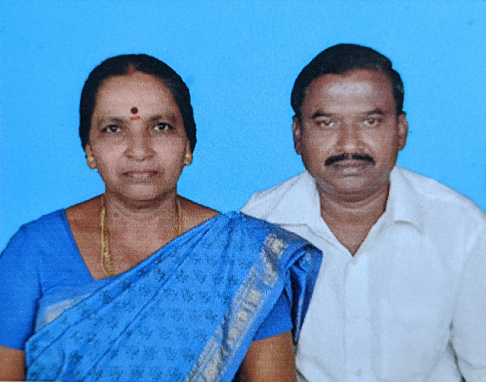
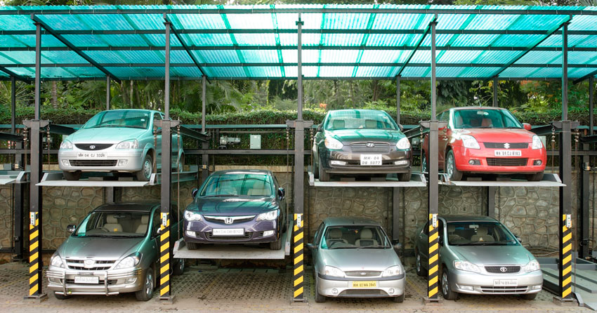
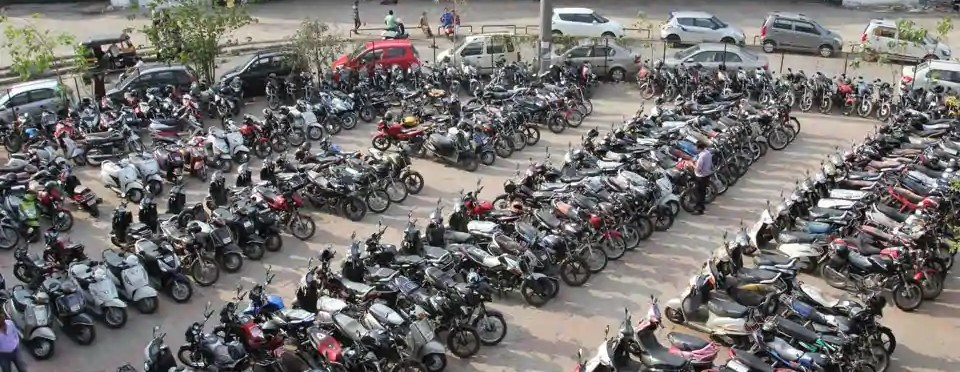

Mr P Devaraju served as an Electrical Engineer in Tamil Nadu State Transport Corporation (TNSTC). Following his retirement in 2010 he
decided to construct a parking lot seeing a huge demand for the same ,opposite to the district collector office, Namakkal. Started first as a parking stand
for bikes and cycles, initially he and his wife D Vijaya looked after the stand. In due time it has become one of the busiest and advanced parking stand in the locality. His forsightedness and commitment
to serve people has helped him achieve this feat. He promises to keep his services affordable and offer supreme comfort for his customers.

Ms D Vijaya(left) Mr P Devaraju(right)
Gallery

A new spacious multilevel parking space for 4-wheel vehicles. 5-point safety system and weekly maintainance .

24 hours security. High tech security cameras.
Cashless payments and online booking AVAILABLE. En route to become a Smart Parking Lot.